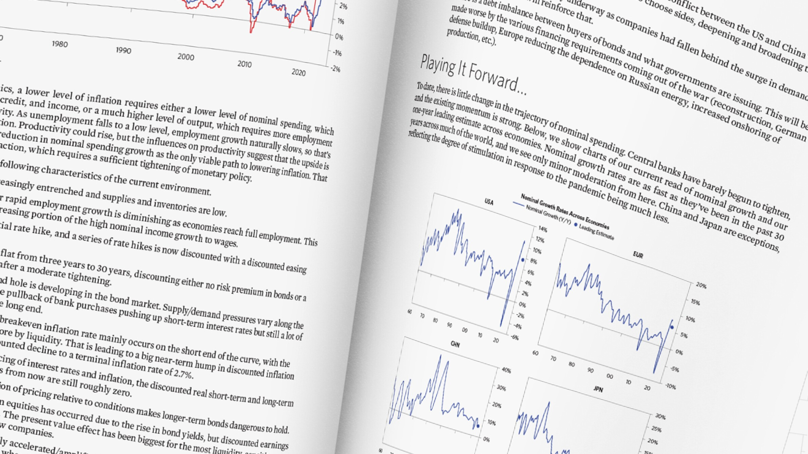

Investigacion y conocimientos
Una actualización de nuestros CIO: Lo que venía ahora está sobre nosotros

19 de Abril
Ray Dalio, CEO de Bridgewater
MP3 Las políticas reflacionarias produjeron inyecciones masivas de dinero y crédito en las economías, lo que condujo a un alto crecimiento nominal, lo que llevó a una inflación autoreforzada, lo que llevó a un endurecimiento de la política monetaria que ahora apenas comienza. La estanflación es el gran riesgo y la guerra en Ucrania se ha sumado a eso.
Lo que venía…
El año pasado, cuando quedó claro que las políticas reflacionarias del MP3 habían producido un nivel de crecimiento del gasto nominal que superaba con creces la capacidad de producción, el resultado natural probablemente sería una probabilidad cada vez mayor de un ciclo inflacionario que se reforzaría a sí mismo, lo que traería a una transición en la política monetaria de extremadamente estimulante a restrictiva.
La fuente de este alto crecimiento nominal fue la inyección masiva de dinero nominal y crédito a través de una política monetaria y fiscal coordinada (MP3). La estimulación fiscal a través de la monetización de la deuda pública elevó los ingresos nominales en todos los grupos de ingresos. Esto proporcionó la financiación inicial de un aumento en el gasto nominal, que elevó aún más los ingresos, lo que llevó a un proceso de gasto nominal autosostenido y autorreforzado, financiado por el ingreso nominal, financiado por el gasto nominal.
Dónde están las cosas ahora…
Hace tiempo que no estamos en un entorno de alto crecimiento nominal, por lo que vale la pena tomarse un momento para registrar la mecánica. El crecimiento nominal es el gasto total medido en dólares gastados (u otra moneda local). El gasto nominal se financia con dinero, crédito e ingresos y se descompone en crecimiento real e inflación. Si la producción sigue el ritmo del gasto nominal, se obtiene un mayor crecimiento real. Si la producción no se mantiene, obtiene precios más altos e inflación. La estanflación es cuando un alto crecimiento nominal es absorbido por precios más altos y deja un bajo nivel de crecimiento real.
El traspaso del gasto nominal a la inflación es la diferencia mecánica entre los dólares nominales gastados y la cantidad producida. Ilustramos esto a continuación. La línea roja es la diferencia entre el crecimiento del PIB nominal y un indicador de la capacidad de producción del trabajo. Aquí, definimos la producción del trabajo como la suma del cambio en el empleo y el cambio en la productividad laboral. La línea azul es la inflación, medida por el deflactor del PIB. Como se muestra, los dos siguen muy de cerca. Desde que la pandemia tocó fondo, a pesar de que el empleo creció rápidamente y la productividad fue positiva (es decir, la producción laboral aumentó), el aumento en el gasto nominal fue mucho mayor y la diferencia se trasladó a la inflación y, cada vez más, a los salarios a medida que disminuía la inactividad laboral. . El gasto nominal y la producción pueden divergir de esta manera porque el gasto es un fenómeno monetario y crediticio, mientras que la producción está impulsada por los factores de producción. Ahora tenemos un exceso de dinero, crédito e ingresos que financian un nivel excesivo de gasto nominal en relación con la producción, con el resultado mecánico de precios más altos en la cantidad dada de bienes y servicios consumidos.